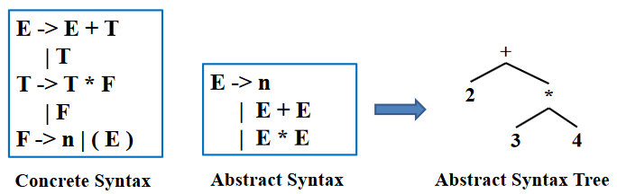
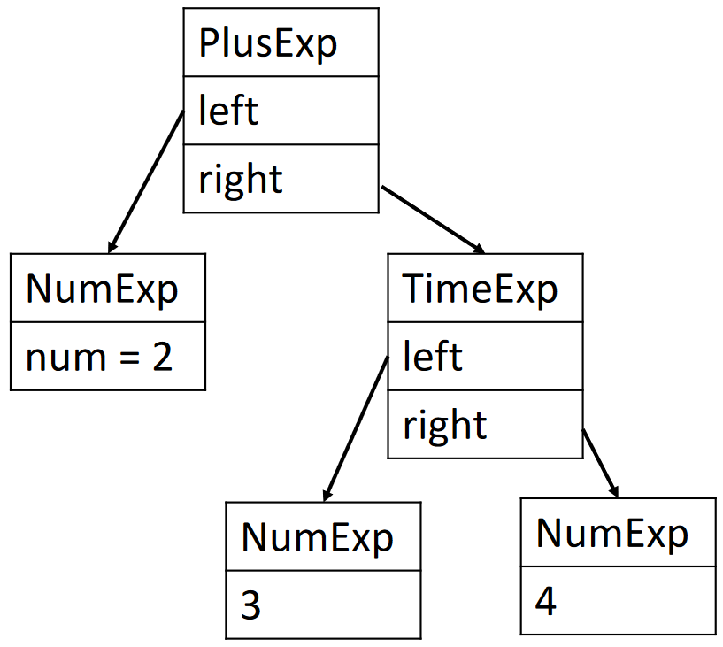

抽象语法¶
约 1601 个字 68 行代码 预计阅读时间 6 分钟
属性文法¶
在本章之前，先介绍一下属性文法 (AttributeGrammar)
定义¶
其用属性描述语义信息，用语义规则描述属性之间的关系，将语义规则与语法规则相结合，可以看作是 上下文无关文法 + 属性 + 属性计算规则：
- 属性:描述文法符号的语义特征，如变量的类型、值等
- 例: 非终结符 \(E\) 的属性 \(E.val\)（表达式的值）
- 属性计算规则（语义规则）：与产生式相关联、反映文法符号属性之间关系的规则
- 比如”如何计算 \(E.val\)“
- 仅表明属性间“抽象”关系，不涉及具体实现细节，如计算次序等
潜在应用¶
由于各种局限性，属性文法并未在所有潜在应用上得到普及
属性文法有两类应用：“推导类”应用 和 “生成类”应用
“推导类”应用类似于程序分析，记录或使用表达式的类型、值、执行代价
| 产生式 | “语法制导”的属性计算规则 |
|---|---|
| \(E \rightarrow E_1 '+' E_2\) | \(E.val := E_1.val + E_2.val\) |
| \(E \rightarrow E_1 '*' E_2\) | \(E.val := E_1.val * E_2.val\) |
| $E \rightarrow '(' E ')' $ | \(E.val := E.val\) |
| \(E \rightarrow number\) | \(E.val := number.lex_val\) |
“生成类”应用类似于程序合成，可以用于
- 抽象语法树生成
- 中间代码甚至汇编生成
实现¶
可以通过 Parser 生成器支持的“语义动作”(Semantic Action) 来实现属性文法，并应用于抽象语法树生成等场景
语义动作¶
定义¶
语义动作是解析函数返回的值，或这些函数的副作用，亦或两者兼而有之
- 对于每个终结符和非终结符，我们可以关联一种语义值的类别，用以表示从该符号派生的语法结构的语义信息
- 每个终结符和非终结符都可能和自己的语义值 (semantic value) 的类别相关联
例如对于一个 \(A\) 的产生式 \(A \rightarrow B C D\)
- 语义动作必须返回一个与非终结符 \(A\) 关联的值
- 它可以根据与匹配的终结符和非终结符 \(B\)、\(C\)、\(D\) 关联的值构建该值
CFG 和其 Semantic Actions
可见上述 表格
Yacc/Bison 中的语义动作¶
在 Yacc/Bison 中：
{...}中的代码块为语义动作$i表示第 \(i\) 个 RHS 符号的语义值$$表示 LHS 符号的语义值%union储存了语义值可以携带的不同可能的类型<variant>用于声明语义值的类型
一个实例如下
%{ ... %}
%union {
int num;
string id;
}
%token <num> INT
%token <id> ID
%type <num> exp
...
%left UMINUS
%%
exp : INT { $$ = $1; }
| exp PLUS exp { $$ = $1 + $3; }
| exp MINUS exp { $$ = $1 - $3; }
| exp TIMES exp { $$ = $1 * $3; }
| MINUS exp %prec UMINUS { $$ = -$2; }
Yacc 的实现方式
- Yacc 生成的解析器会保留一个与状态栈并行的语义值栈
- 当解析器执行归约时，它必须执行相应的 C 语言语义动作
- 如何知道规则 \(A \rightarrow Y_1 \cdots Y_k\) 的
$i- 从栈顶部的 k 个元素中
- 当解析器从符号栈中弹出 \(Y_k \cdots Y_1\) 并压入 \(A\) 时，它还会从语义值栈中弹出 k 个值并压入通过执行 C 语义动作代码获得的值
抽象语法树¶
动机与定义¶
实际上，我们可以在 Yacc/Bison 的语义动作里直接构建一整个编译器，但是
- 可读性和可维护性差
- 必须按照解析的顺序分析程序
因此，可以选择将语法（解析）问题与语义（类型检查和机器代码翻译）问题分开。为了实现这个目的，需要让解析器生成后续阶段可以遍历的解析树（Parse Tree）：
- 具体解析树（Concrete Parse Tree）：代表源语言的具体语法
- 对于输入的每个 token 恰好有一个叶子，对于在解析过程中规约（reduce）的每个语法规则有一个内部结点
- 但是并不方便直接使用：
- 产生很多后续阶段多余且无用的 token，比如 memory usage
- 过于依赖具体的语法规则，当语法规则变化时，解析树也需要变化
- 抽象语法树（Abstract Syntax Tree）：代表源语言的抽象语法
- 解析器使用具体语法（Concrete Syntax）为抽象语法（Abstract Syntax）构建解析树——抽象语法树
- 仅包含程序的结构信息，不包含具体的细节，在解析器和编译器的后续阶段之间建立一个干净的接口

示例与构造¶
例如，可以使用如下的数据结构：
typedef struct A_exp_ *A_exp;
struct A_exp_ {
enum {A_numExp, A_plusExp, A_timesExp} kind;
union {
int num;
struct {A_exp left; A_exp right;} plus;
struct {A_exp left; A_exp right;} times;
} u;
};
A_exp A_NumExp(int num);
A_exp A_PlusExp(A_exp left, A_exp right);
A_exp A_TimesExp(A_exp left, A_exp right);
与对应的添加方法：
A_exp A_PlusExp(A_exp left, A_exp right) {
A_exp e = checked_malloc(sizeof(*e));
e->kind = A_plusExp;
e->u.plus.left = left;
e->u.plus.right = right;
return e;
}
A_exp A_TimesExp(A_exp left, A_exp right) {
A_exp e = checked_malloc(sizeof(*e));
e->kind = A_timesExp;
e->u.times.left = left;
e->u.times.right = right;
return e;
}
那么对于 2 + 3 * 4，可以构造如下的抽象语法树：
e1 = A_NumExp(2);
e2 = A_NumExp(3);
e3 = A_NumExp(4);
e4 = A_TimesExp(e2, e3);
e5 = A_PlusExp(e1, e4);

此外，也可以使用 Yacc/Bison 的语义动作来构造抽象语法树：
%left PLUS
%left TIMES
%%
exp : NUM { $$ = A_NumExp($1); }
| exp PLUS exp { $$ = A_PlusExp($1, $3); }
| exp TIMES exp { $$ = A_TimesExp($1, $3); }
用途¶
抽象语法树是编译器的重要数据结构，可以用于：
- Pretty print
- Desugaring
- Inlining
- High-level optimizations (e.g., 删除公共子表达式)
- Symbolic execution! (e.g., Clang Static Analyzer)
- Semantic analysis, e.g., type checking
- Translation to intermediate representations
- ...
AST 与中间表示
编译相关书籍/课程中通常会说“基于 AST 翻译到中间语言/表示”。但是在很多其他场合，我们可以认为 AST 本身也是一种“中间表示”。
位置信息¶
在一次性编译器中，词法分析、语法分析和语义分析都是同时完成的，如果存在必须向用户报告的类型错误，则词法分析器的当前位置是错误源位置的合理近似值。因此，在单遍编译器中，词法分析器保留一个“当前位置”全局变量。
而对于使用抽象语法树数据结构的编译器，它不需要一次性完成所有解析和语义分析，词法分析器甚至在语义分析开始之前就到达了文件末尾，所以必须记住抽象语法树的每个结点的源文件位置：
- 抽象语法数据结构必须有 pos 字段，这些字段指示派生这些抽象语法结构的字符在原始源文件中的位置
- 词法分析器必须将每个标记的开头和结尾的位置传递给解析器
- 解析器应该维护一个位置栈以及语义值栈，使每个符号的位置可供语义操作使用
Bison 无法实现，但是 Yacc 可以，具体实现而言是定义一个非终结符号 pos，其语义值为源位置（行号，或行号和行内位置）。
%{ extern A_OpExp (A_exp,A_binop,A_exp,position); %}
%union { int num; string id; position pos; /* ... */ }
%type <pos> pos
pos: { $$ = EM_tokpos; }
exp: exp PLUS pos exp { $$ = A_OpExp($1, A_plus, $4, $3); }
创建日期: 2024年6月20日 11:01:22